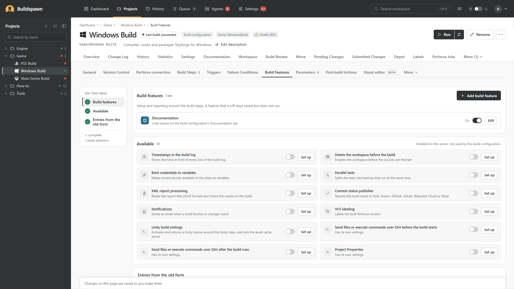
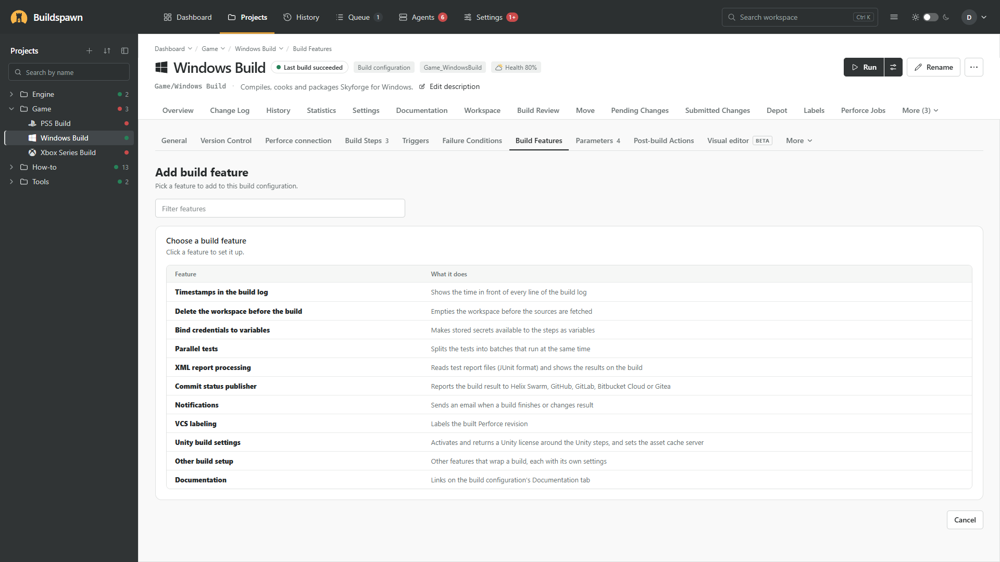

Build Features
Setup and reporting around the build steps: timestamps, clean workspace, secrets, test reports, notifications and more.
When to use it
Use it for settings that act on the whole build, not on one step. A feature that is off stays saved but does not run. The top list shows the features this build configuration uses. Available lists the rest.


How to set it up
- Open the build configuration and click Settings. Then click Build Features.
- Click Add build feature, or click Set up on a card under Available.
- Fill in the form of the feature and click Save.
- Use the On switch on a feature to turn it off without deleting it.
- This page saves each change at once.
Every field
The picker lists these features. Each has its own page.
| Field | What it does | Default | Example |
|---|---|---|---|
| Timestamps in the build log | Shows the time in front of every line of the build log. | - | Page |
| Delete the workspace before the build | Empties the workspace before the sources are fetched. | - | Page |
| Bind credentials to variables | Makes stored secrets available to the steps as variables. | - | Page |
| Parallel tests | Splits the tests into batches that run at the same time. | - | Page |
| XML report processing | Reads test report files (JUnit format) and shows the results. | - | Page |
| Commit status publisher | Reports the build result to Helix Swarm, GitHub, GitLab, Bitbucket Cloud or Gitea. | - | Page |
| Notifications | Sends an email when a build finishes or changes result. | - | Page |
| VCS labeling | Labels the built Perforce revision. | - | Page |
| Unity build settings | Activates and returns a Unity license around the Unity steps, and sets the asset cache server. | - | Page |
| Other build setup | Features that wrap a build, each with its own settings: SSH before the build, SSH after the build, Project Properties. | - | - |
| Documentation | Links on the Documentation tab. | - | Page |
A worked example
Windows Build uses Timestamps in the build log, Bind credentials to variables for the store token, and Notifications to the release team. The build time limit is set under Failure Conditions.
What you see when it runs
The list shows a one-line summary for each feature, for example Email to release-team@studio.example when a build fails and when it is fixed. A feature with a problem shows what is missing.
Problems and fixes
| Problem | What to do |
|---|---|
| A feature is greyed out or missing | The build configuration cannot hold it, or the plugin behind it is not installed. |
| An inherited feature | A project passes it down. Use Override, Disable in this job or Reset. |
| Post-build actions are not here | They are on Post-build Actions. Notifications, XML report processing and VCS labeling show in both places. |